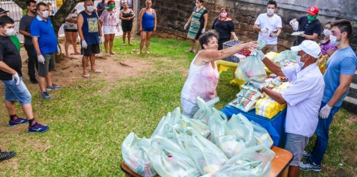

Erradicação da Pobreza
A pobreza é um problema complexo e multifacetado que afeta milhões de pessoas ao
redor do mundo, sendo uma das maiores barreiras para o desenvolvimento humano.
Ela gera uma série de consequências negativas que impactam não apenas os indivíduos
diretamente afetados, mas também a sociedade como um todo.
Combater a pobreza é essencial não apenas por uma questão de justiça social, mas também
para promover uma sociedade mais equilibrada, onde todos tenham as mesmas oportunidades
de prosperar e contribuir para o bem comum. A erradicação da pobreza é fundamental
para a construção de um futuro mais justo e sustentável.
A seguir alguns dos problemas causados pela existencia desse problema:
1. Saúde:
Pessoas em situação de pobreza frequentemente têm acesso
limitado a cuidados de saúde de qualidade. Isso resulta em altas taxas de mortalidade
infantil, doenças não tratadas e uma expectativa de vida reduzida
2. Educação:
A pobreza impede o acesso à educação de qualidade.
Crianças de famílias pobres muitas vezes abandonam a escola para trabalhar e
ajudar no sustento da família, perpetuando o ciclo de pobreza
3. Nutrição:
A insegurança alimentar é uma realidade para muitas
famílias pobres. A falta de acesso a alimentos nutritivos pode levar à desnutrição, que
afeta o desenvolvimento físico e cognitivo das crianças
4. Habitação:
A pobreza força muitas pessoas a viverem em condições
inadequadas, sem acesso a saneamento básico, água potável e eletricidade.
Isso aumenta o risco de doenças e reduz a qualidade de vida
5. Violência e Criminaslidade:
A falta de oportunidades econômicas
pode levar ao aumento da criminalidade e da violência. Comunidades pobres
frequentemente enfrentam maiores níveis de violência, o que cria um ambiente de
insegurança e medo
Por que Devemos Combater a Pobreza
Combater a pobreza é uma das prioridades mais urgentes para alcançar o
desenvolvimento sustentável e melhorar a qualidade de vida de milhões de pessoas ao
redor do mundo. A pobreza não afeta apenas quem vive em situação de vulnerabilidade,
mas também prejudica a sociedade como um todo, perpetuando ciclos de desigualdade,
violência e exclusão social. Quando não é combatida, a pobreza limita o acesso a
recursos essenciais como educação, saúde, alimentação e moradia, minando o potencial das
pessoas e das comunidades de progredirem. Além disso, ela impacta negativamente a
economia, reduzindo a produtividade e a capacidade de crescimento. Ao combatermos a
pobreza, promovemos a justiça social, fortalecemos a coesão social e criamos
oportunidades para que todos possam participar do desenvolvimento econômico,
criando sociedades mais prósperas, pacíficas e equitativas.
Combater a pobreza é uma questão de justiça social. Todos devem ter a oportunidade
de viver com dignidade e ter acesso aos recursos necessários para uma vida saudável e
produtiva. Podemos tambem reduzir a pobreza para contribui para o
desenvolvimento econômico. Pessoas com melhores condições de vida têm maior
capacidade de contribuir para a economia através do trabalho e do
consumo. A pobreza extrema pode levar a instabilidade social
e política. Ao reduzir a pobreza, promovemos uma sociedade mais estável e
coesa.
Melhorar as condições de vida das pessoas em situação de pobreza
tem um impacto positivo na saúde pública. Menos doenças e melhores condições de vida
resultam em uma população mais saudável e produtiva. Investir na educação de pessoas em situação de pobreza
pode levar a inovações e avanços que beneficiam toda a sociedade. A educação é uma
ferramenta poderosa para quebrar o ciclo da pobreza e promover o
progresso.

Conclusão
Combater a pobreza é essencial para construir uma sociedade mais justa, saudável e
próspera. É um investimento no futuro de todos, pois uma população bem-educada e
saudável é a base para o desenvolvimento sustentável e a inovação. Devemos trabalhar
juntos para implementar políticas públicas eficazes que promovam a igualdade de
oportunidades e garantam que todos tenham acesso aos recursos necessários para uma
vida digna.